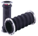
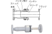
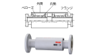

2021年
問題114 給水設備の配管に関する次の記述のうち，最も不適当なものは次のうちどれか．
（1）給水管と排水管が平行して埋設される場合には，給水管は排水管の上方に埋設する．
（2）止水弁は，主管からの分岐，各系統の起点，機器との接続部等に設置する．
（3）ポンプに弁及び配管を取り付ける場合には，その荷重が直接ポンプにかからないように支持する．
（4）建物の揺れ，配管の振動等による変位を吸収するため，貯水槽と配管との接続には伸縮継手を使用する．
（5）機器との接続配管は，機器の交換の際に容易に機器が外せるフランジ接合などとする．
2021年
問題114 正解（4） 頻出度AAA
振動等による変位を吸収するには，フレキシブルジョイント（可撓継手）（2021-114-1図）を用いる．
2021-114-1図 フレキシブルジョイントの例

出典 株式会社TOZEN
https://www.tozen.co.jp/product/lsconnector-g-kouatu/
伸縮継手は熱による配管の伸縮を吸収するために用いる（2021-114-2図，2021-114-3図参照）．
2021-114-2図 スリーブ型伸縮管継手

出典（写真） タイヨージョイント株式会社
http://www.taiyojoint.co.jp/category/free/
2021-114-3図 ベローズ型伸縮管継手

出典（写真） 株式会社 ベン
https://www.venn.co.jp/products/expansion_joint/jb-18
-(1) 両配管の平行間隔は500mm以上とし，交差する場合にも，給水管を上方に埋設する．又，上水管，雑用水管，給湯管等が平行して配管される場合は配列を途中で変えてはならない．